La fotosíntesis es un proceso fundamental que ocurre en las plantas, algas y algunas bacterias, donde utilizan la energía lumínica del sol para convertir dióxido de carbono y agua en azúcares y oxígeno. Este proceso es esencial no solo para la producción de alimentos en las plantas, sino también para la vida en la Tierra en general, ya que proporciona el oxígeno que necesitan muchos organismos para respirar.
La fotosíntesis se lleva a cabo en los cloroplastos, que son orgánulos especializados presentes en las células de los organismos fotosintéticos. Dentro de los cloroplastos, hay estructuras llamadas tilacoides, que contienen pigmentos fotosintéticos como la clorofila. La clorofila es crucial porque absorbe la energía lumínica del sol, que luego se convierte en energía química durante la fase luminosa de la fotosíntesis.
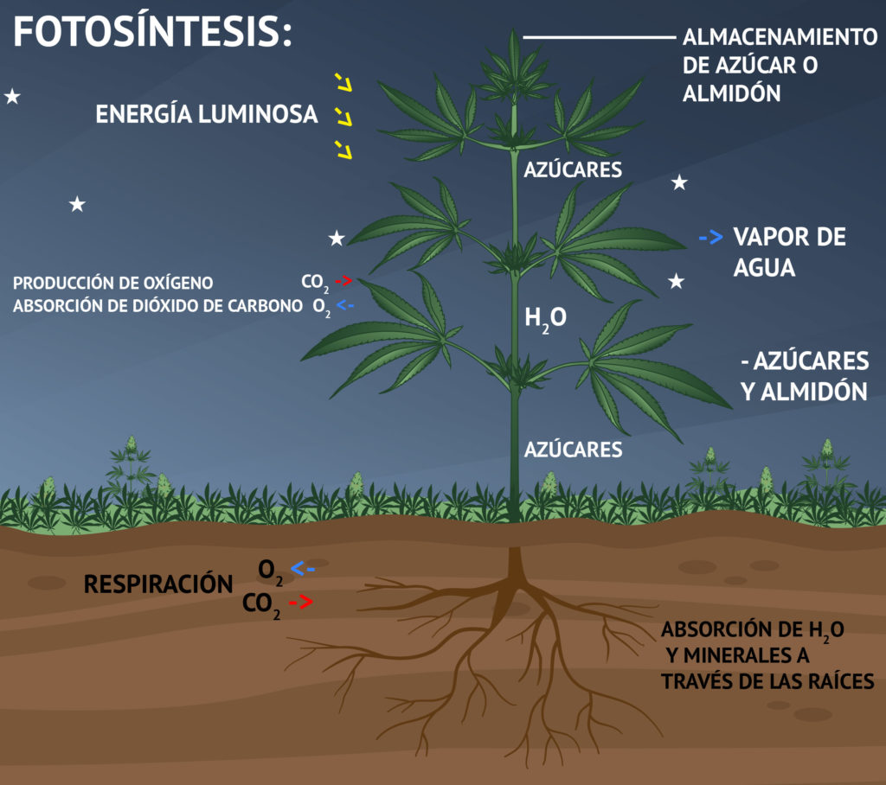
Proceso de la Fotosíntesis. (Luminíca)
Durante la fase luminosa, la energía lumínica se utiliza para dividir las moléculas de agua en oxígeno molecular (O₂), protones (H⁺) y electrones (e⁻). Este proceso se conoce como fotólisis del agua. El oxígeno liberado es liberado hacia la atmósfera como un subproducto esencial para la respiración aeróbica de muchas formas de vida.
Los electrones y los protones producidos durante la fotólisis del agua se utilizan luego en la fase oscura de la fotosíntesis, también conocida como el ciclo de Calvin. En esta etapa, que ocurre en el estroma del cloroplasto, el dióxido de carbono (CO₂) atmosférico se fija y se convierte en azúcares como glucosa. Este proceso de fijación de carbono es impulsado por la energía química almacenada en las moléculas de ATP y los portadores de electrones reducidos como el NADPH, ambos generados durante la fase luminosa.
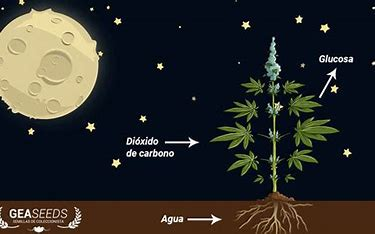
Proceso de la Fotosíntesis. (Oscura)
CICLO DEL CARBONO
El ciclo del carbono es un proceso complejo que describe cómo el carbono se mueve entre la atmósfera, la biosfera, la litosfera y los océanos. Este ciclo es crucial para mantener el equilibrio del carbono en la Tierra y es fundamental para la vida tal como la conocemos. Aquí te explico de manera general cómo ocurre:
El ciclo del carbono comienza en la atmósfera, donde el dióxido de carbono (CO₂) está presente en pequeñas cantidades. Las plantas y otros organismos fotosintéticos absorben este CO₂ atmosférico durante la fotosíntesis para producir azúcares y liberar oxígeno (O₂) como subproducto. Este proceso convierte el carbono inorgánico en carbono orgánico, que es utilizado por los organismos para crecer y desarrollarse.
A través de la cadena alimentaria, el carbono orgánico pasa de los productores (plantas y algas) a los consumidores primarios (herbívoros) y luego a los consumidores secundarios (carnívoros), transfiriendo así la energía y el carbono a través de los diferentes niveles tróficos. Cuando los organismos mueren, son descompuestos por bacterias y hongos, que liberan CO₂ de nuevo a la atmósfera en un proceso llamado respiración.
Además de la respiración, el carbono puede ser liberado a la atmósfera mediante la quema de combustibles fósiles y la deforestación, que liberan CO₂ almacenado en la biomasa y en el suelo. Por otro lado, el carbono puede ser almacenado en la biomasa y en el suelo durante períodos prolongados, a través de procesos como la sedimentación de materia orgánica y la formación de carbonatos en los océanos.
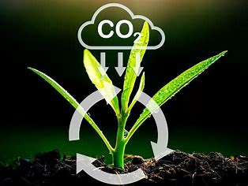
Fotosíntesis.
El ciclo del carbono también incluye procesos geológicos a largo plazo, como la erosión de rocas y minerales que liberan CO₂ a la atmósfera, y la captura de carbono en forma de carbonatos en sedimentos oceánicos y rocas sedimentarias.
En resumen, el ciclo del carbono es un proceso dinámico y complejo que regula la cantidad de CO₂ en la atmósfera y juega un papel crucial en la regulación del clima global y en la sustentabilidad de los ecosistemas terrestres y acuáticos.
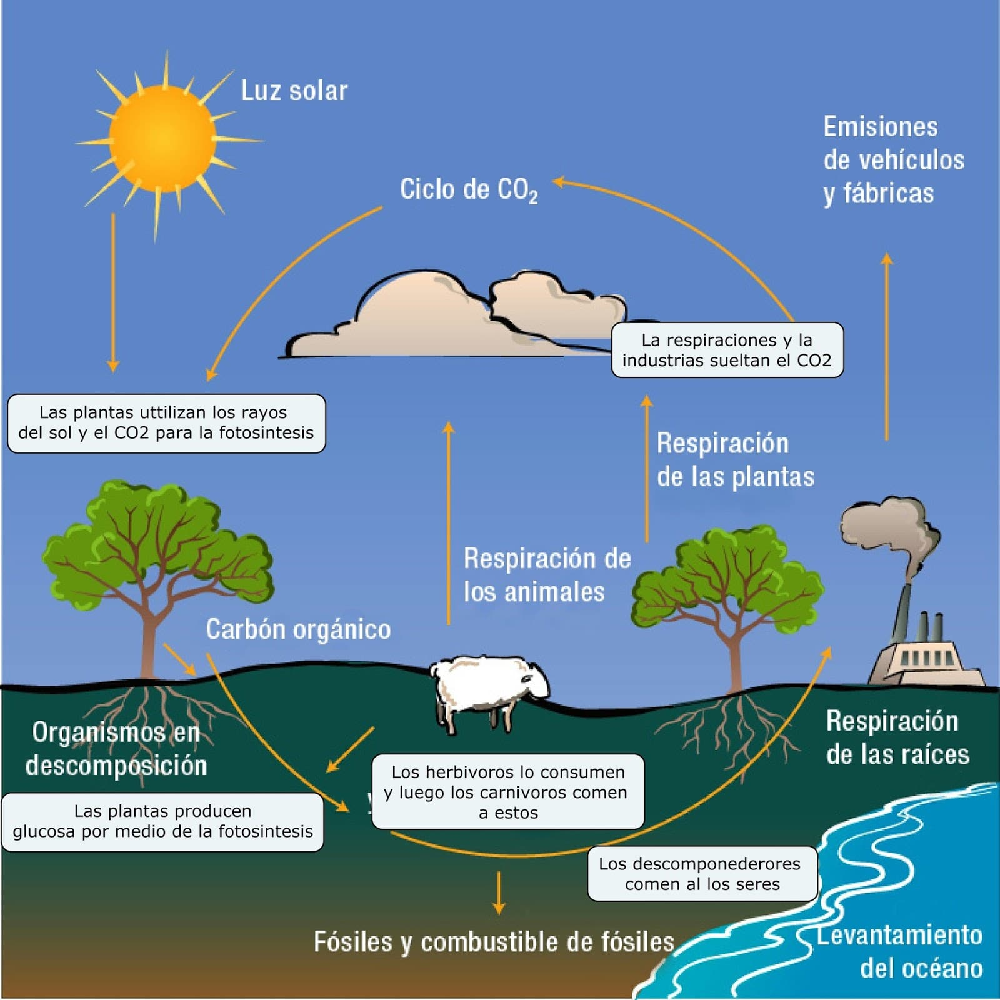
Ciclo del carbono.
PROGRESIÓN 1
TRANSFERENCIA DE ENERGÍA MEDIANTE COLISIONES.
LA ENERGÍA
La transferencia de energía entre objetos mediante colisiones es un fenómeno fundamental en la física que ocurre constantemente en nuestro entorno. Cuando dos objetos chocan, parte de la energía de movimiento de uno se transfiere al otro, afectando no solo sus velocidades y direcciones, sino también generando otros tipos de energía como sonido, luz y calor. Este proceso es crucial para entender cómo la energía se distribuye y transforma en diferentes formas durante las interacciones físicas cotidianas y en escalas microscópicas, influenciando desde la temperatura de un objeto hasta la propagación del sonido y la producción de luz visible.
MOVIMIENTO (ENERGÍA CINÉTICA)
Cuando dos objetos chocan entre sí, parte de la energía cinética de uno se transfiere al otro. Por ejemplo, si un automóvil golpea un poste, la energía cinética del automóvil se transfiere al poste y al automóvil se detiene. Esta transferencia ocurre porque la fuerza del impacto provoca una aceleración en el objeto receptor de la colisión, cambiando su velocidad y, por lo tanto, su energía cinética.
Energía cinética.
SONIDO
El sonido es el resultado de la vibración de partículas en un medio, como el aire, cuando un objeto vibra o choca con otro. Durante una colisión, parte de la energía cinética puede convertirse en vibraciones mecánicas en los objetos implicados. Estas vibraciones se propagan como ondas sonoras a través del medio circundante, transfiriendo la energía acústica.
Sonido.
LUZ (ENERGÍA RADIANTE)
La transferencia de energía en forma de luz se produce cuando la energía cinética de un objeto se convierte en energía electromagnética en el rango visible del espectro. Por ejemplo, en una colisión de partículas subatómicas o en la fusión nuclear, se libera energía en forma de luz visible. En otros casos, como en colisiones que provocan chispas o fuego, parte de la energía cinética se transforma en energía radiante en forma de luz.
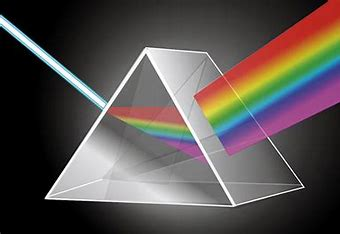
Luz.
CALOR (ENERGÍA TÉRMICA)
La energía térmica se transfiere durante una colisión cuando parte de la energía cinética se convierte en vibraciones térmicas de las partículas de los objetos. Esto aumenta la temperatura de los objetos involucrados y del entorno circundante. Por ejemplo, cuando dos objetos se frotan entre sí (como al frotar las manos), la fricción genera calor debido a la transferencia de energía cinética a energía térmica.
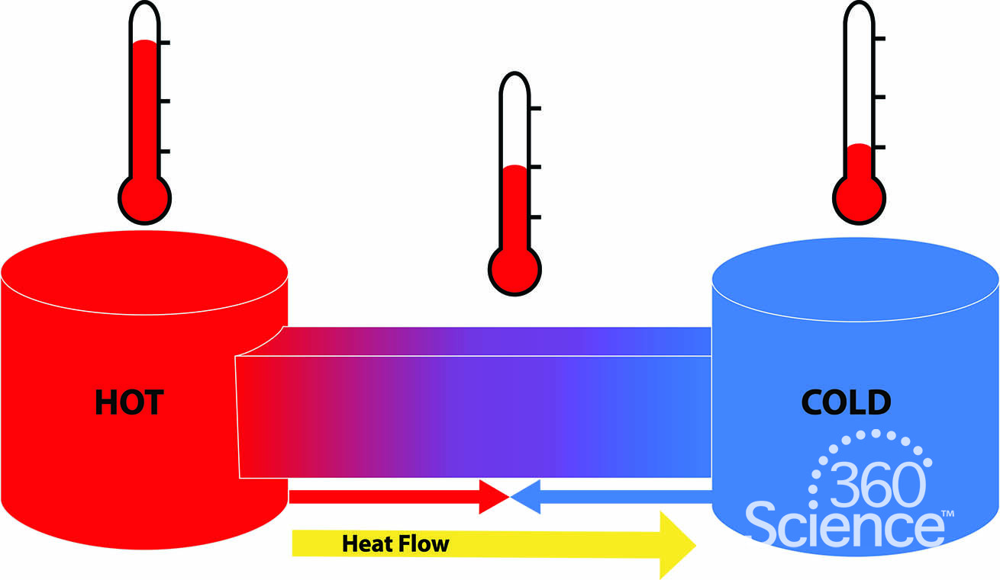
Calor.
LA NATURALEZA DE LA ENERGÍA
La naturaleza de la energía es fundamental para comprender cómo funciona el universo a niveles tanto macroscópicos como microscópicos. La energía es una propiedad de los sistemas físicos que permite realizar trabajo o producir cambios. Aquí te explico de manera general cómo se manifiesta la energía:
La energía puede existir en diversas formas. Una de las formas más básicas es la energía cinética, que está asociada al movimiento de los objetos. Por ejemplo, un automóvil en movimiento tiene energía cinética que puede transferirse a otros objetos en caso de una colisión.
Otra forma importante es la energía potencial, que es la energía almacenada en un sistema debido a su posición o configuración. Por ejemplo, un objeto elevado en el aire tiene energía potencial gravitatoria, que se convierte en energía cinética cuando el objeto cae.
La energía térmica es una forma de energía asociada al movimiento aleatorio de partículas en un sistema. Esta energía determina la temperatura de un cuerpo y puede transferirse entre objetos mediante procesos como la conducción, la convección y la radiación.
La energía química se encuentra almacenada en los enlaces químicos de las moléculas y se libera durante reacciones químicas, como la combustión de combustibles o la respiración celular.
La energía electromagnética es transportada por ondas electromagnéticas, como la luz visible, los rayos X y las microondas. Esta forma de energía es crucial para la transmisión de información y para los procesos biológicos, como la fotosíntesis.
Finalmente, la energía nuclear se libera durante reacciones nucleares, como la fisión nuclear (división de núcleos atómicos) y la fusión nuclear (fusión de núcleos atómicos ligeros), y es la fuente de energía en estrellas como el Sol.
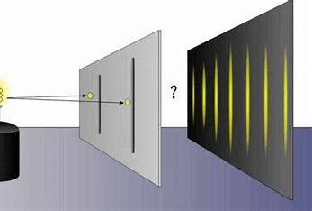
Dualidad onda/partícula.
LA ENERGÍA EN MOVIENTO
La energía en movimiento se refiere a la energía cinética, que es la energía asociada al movimiento de un objeto. Esta forma de energía es fundamental en la física y se manifiesta de varias maneras:
Cuando un objeto está en movimiento, posee energía cinética que depende de su masa y su velocidad. Cuanto más rápido se mueva el objeto y más masa tenga, mayor será su energía cinética. Por ejemplo, un automóvil en movimiento a alta velocidad tiene más energía cinética que un ciclista que se mueve a una velocidad más baja.
La energía cinética es transferida durante las colisiones. Cuando dos objetos chocan, parte de la energía cinética de uno se puede transferir al otro. Por ejemplo, en un accidente de automóvil, la energía cinética del vehículo en movimiento se transfiere al objeto con el que choca, como otro automóvil, un poste o una barrera.
La energía cinética también juega un papel crucial en la generación de electricidad. Por ejemplo, las turbinas eólicas capturan la energía cinética del viento y la convierten en energía eléctrica mediante un generador. Del mismo modo, las turbinas hidroeléctricas aprovechan la energía cinética del agua en movimiento para generar electricidad.
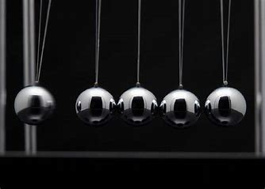
Pendulo de Newton. (Energía cinética)
PROGRESIÓN 2
LA ENERGÍA Y SUS MANIFESTACIONES: CAMPOS ELECTROMAGNÉTICOS, ENERGÍA TÉRMICA Y ENERGÍA CINÉTICA.
CAMPOS ELECTROMAGNÉTICOS:
Los campos electromagnéticos son un concepto fundamental en la física que describe la interacción entre cargas eléctricas y corrientes eléctricas. Estos campos se extienden en el espacio y transportan energía en forma de radiación electromagnética, que abarca desde ondas de radio de baja frecuencia hasta rayos gamma de alta energía.
En términos generales, un campo electromagnético se compone de dos componentes inseparables: un campo eléctrico y un campo magnético que oscilan perpendicularmente entre sí y se propagan a la velocidad de la luz. La relación entre estos campos está descrita por las ecuaciones de Maxwell, que son fundamentales en la teoría electromagnética.
La radiación electromagnética, generada por estos campos, es una forma de energía que transporta tanto energía como información a través del espacio. Las ondas electromagnéticas son portadoras de energía que pueden ser absorbidas por materiales y convertidas en calor (como en el caso de microondas), en energía eléctrica (como en las antenas receptoras de radio), o en luz visible (como en el caso de la radiación solar).
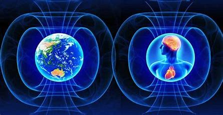
Campos electromágneticos.
TIPOS DE ENEGÍA ELECTROMAGNÉTICA
Energía Radiante o Radiación Electromagnética:
Es la forma primaria de energía en los campos electromagnéticos. Esta energía viaja en forma de ondas electromagnéticas que incluyen desde ondas de radio de baja frecuencia hasta rayos gamma de alta energía.
Energía Luminosa o Luz Visible:
Es una parte específica del espectro electromagnético que es detectada por el ojo humano. La luz visible abarca longitudes de onda entre aproximadamente 400 a 700 nanómetros y es responsable de la percepción visual en los seres humanos y muchos otros organismos.
Energía Infrarroja:
Se encuentra justo por debajo del espectro visible y tiene longitudes de onda más largas que la luz visible. La radiación infrarroja es comúnmente asociada con el calor, ya que es absorbida por los objetos y provoca un aumento en la vibración de las moléculas, aumentando así la temperatura del objeto.
Energía Ultravioleta (UV):
Se sitúa por encima del espectro visible y tiene longitudes de onda más cortas que la luz visible. La radiación ultravioleta tiene suficiente energía para ionizar átomos y moléculas, lo que puede tener efectos biológicos significativos y es responsable de la producción de vitamina D en la piel humana, pero también puede causar daño celular si se recibe en exceso.
Energía de Microondas:
Se encuentra en el rango de frecuencias entre las ondas de radio y las ondas infrarrojas. Las microondas son utilizadas en diversas aplicaciones tecnológicas, como las comunicaciones inalámbricas y los hornos de microondas, donde la energía electromagnética se utiliza para calentar alimentos mediante la agitación de las moléculas de agua.
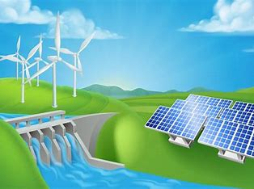
Tipos de energía
ENERGÍA TÉRMICA
La energía térmica se relaciona estrechamente con los campos electromagnéticos debido a la radiación electromagnética que transporta calor. Cuando la radiación electromagnética, como la luz visible o las microondas, incide sobre un objeto, parte de esta energía electromagnética es absorbida por el objeto. Esta absorción puede hacer que las moléculas dentro del objeto aumenten su energía cinética, es decir, comiencen a vibrar más rápidamente.
Este aumento en la energía cinética de las moléculas se traduce en un incremento en la temperatura del objeto, lo que conocemos como energía térmica. Por ejemplo, cuando la luz solar incide sobre una superficie, como el suelo o la piel humana, parte de la energía de la radiación solar se convierte en energía térmica, calentando la superficie.
Del mismo modo, en aplicaciones tecnológicas como los hornos de microondas, la radiación electromagnética en forma de microondas es absorbida por las moléculas de agua, grasas y otros componentes de los alimentos. Esta absorción de energía electromagnética provoca una agitación molecular rápida, lo que genera calor y cocina los alimentos de manera eficiente.
Por otro lado, el fenómeno de la radiación térmica es importante en la transferencia de calor entre objetos que están a diferentes temperaturas. Todos los objetos emiten radiación electromagnética en forma de calor, conocida como radiación infrarroja, según la ley de radiación de Planck. Esta radiación térmica puede transferirse de un objeto a otro a través del espacio, incluso en el vacío, lo que juega un papel crucial en los procesos de enfriamiento y calentamiento de objetos en el universo.
Energía térmica.
Progresión 5
LA TRANSFERENCIA DE ENERGÍA.
FLUJOS DE ENERGÍA
Los flujos de energía son un concepto fundamental que describe cómo la energía se transfiere y se transforma a través de los sistemas físicos. La energía puede manifestarse en diversas formas, como energía cinética (asociada al movimiento de objetos), energía potencial (debida a la posición o configuración de un sistema), energía térmica (relacionada con el calor), energía electromagnética (transportada por ondas electromagnéticas como la luz), entre otras.
En un sistema físico, los flujos de energía implican tanto la transferencia de energía de un lugar a otro como la transformación de energía de una forma a otra. Por ejemplo, cuando un objeto se eleva en el aire, su energía potencial aumenta debido a su altura, y cuando cae, esta energía potencial se convierte en energía cinética a medida que gana velocidad. Este proceso ilustra cómo la energía puede cambiar de forma pero se conserva en el sistema total.
En términos de calor y termodinámica, los flujos de energía térmica son vitales. Por ejemplo, el calor fluye desde objetos calientes hacia objetos más fríos hasta que ambos alcanzan el equilibrio térmico, como cuando una taza caliente de café se enfría en una habitación más fría.
En sistemas electromagnéticos, como en antenas de radio o láseres, la energía electromagnética fluye desde fuentes generadoras hacia el espacio circundante, transmitiendo información o realizando trabajo.
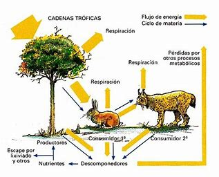
Flujo de energía.
MANIFESTACIONES DE LA TRANSFERENCIA DE ENERGÍA
Transferencia de Energía Térmica:
Esta es una de las formas más comunes de transferencia de energía. Ocurre cuando hay una diferencia de temperatura entre dos cuerpos o sistemas. El calor fluye espontáneamente desde el objeto más caliente hacia el más frío hasta que se alcanza el equilibrio térmico. Por ejemplo, cuando calientas agua en una estufa, el calor se transfiere desde la estufa al agua.
Transferencia de Energía Cinética:
La energía cinética se refiere a la energía asociada al movimiento de objetos. Cuando un objeto en movimiento choca con otro, parte de su energía cinética puede transferirse al segundo objeto. Por ejemplo, en una colisión de automóviles, la energía cinética del vehículo en movimiento se transfiere al objeto con el que choca.
Transferencia de Energía Potencial:
La energía potencial está asociada con la posición o configuración de un objeto en un campo de fuerza, como la gravedad o un campo eléctrico. Cuando un objeto se eleva en el aire, gana energía potencial gravitatoria que puede convertirse en energía cinética cuando cae. Esta transferencia ocurre debido a la acción de la fuerza gravitatoria.
Transferencia de Energía Eléctrica:
La energía eléctrica se transfiere a través de conductores eléctricos cuando hay un flujo de electrones, que es la corriente eléctrica. Esta forma de energía es fundamental en el funcionamiento de dispositivos eléctricos y sistemas de distribución de energía.
Transferencia de Energía Radiante:
La energía radiante se refiere a la transferencia de energía a través de ondas electromagnéticas, como la luz visible, las microondas y los rayos X. Esta energía se propaga a través del espacio y puede ser absorbida por materiales, convirtiéndose en calor (como en el caso de la radiación solar absorbida por la Tierra) o en energía eléctrica (como en paneles solares).
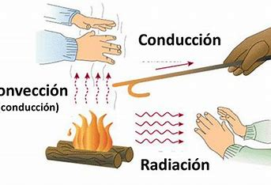
Transferencia de energía.
TRANSFERENCIA DE ENERGÍA A TRAVÉS DE CIRCUITOS ELECTRÓNICOS
En circuitos electrónicos, la transferencia de energía es un proceso fundamental que implica la conversión y el movimiento de energía eléctrica entre diferentes componentes y dispositivos. Esta transferencia se lleva a cabo a través del flujo de corriente eléctrica, que es el movimiento ordenado de electrones a lo largo de los conductores.
En un circuito típico, la energía eléctrica se suministra desde una fuente de alimentación, como una batería o un adaptador de corriente. Esta energía se convierte inicialmente en energía cinética de los electrones en el circuito, lo que significa que los electrones ganan energía a medida que se mueven a lo largo del conductor.
Durante su recorrido a través del circuito, los electrones pueden pasar por resistencias, capacitores, inductores y otros componentes.
La energía también se puede transferir de un componente a otro a través de conexiones directas, como en circuitos integrados y microprocesadores, donde se manipula y transforma la energía eléctrica para realizar cálculos y procesamiento de información.
La ley de Ohm es un principio fundamental en la electricidad que describe la relación entre la corriente eléctrica (I), la diferencia de potencial o voltaje (V) y la resistencia eléctrica (R) en un circuito eléctrico. Fue formulada por el físico alemán Georg Simon Ohm en 1827 y establece lo siguiente:
𝑉
=
𝐼
⋅
𝑅
V=I⋅R
Donde:
𝑉
V es el voltaje o la diferencia de potencial en voltios (V).
𝐼
I es la corriente eléctrica en amperios (A).
𝑅
R es la resistencia eléctrica en ohmios (
Ω
Ω).
Esta ecuación indica que el voltaje aplicado a través de un conductor (como un resistor) es igual a la corriente que fluye a través de él multiplicada por la resistencia del conductor.
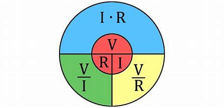
Ley de Ohm.
EFECTOS TÉRMICOS Y LUMÍNICOS
Los efectos térmicos y lumínicos son dos aspectos fundamentales relacionados con la energía en forma de calor y luz, respectivamente.
Los efectos térmicos se refieren a la transferencia de energía en forma de calor entre objetos que están a diferentes temperaturas. Este proceso puede ocurrir por conducción, donde el calor se transmite a través de materiales sólidos, o por convección, donde el calor se mueve a través de un fluido como el aire o el agua. Además, la radiación térmica es otro modo de transferencia, donde el calor se irradia en forma de ondas electromagnéticas, como la luz infrarroja emitida por objetos calientes. Estos procesos son fundamentales en la regulación del clima global y en aplicaciones tecnológicas como la climatización y la generación de energía térmica.
Por otro lado, los efectos lumínicos se centran en la energía transportada por ondas electromagnéticas, especialmente en la región de la luz visible y más allá. La propagación de la luz incluye fenómenos como la reflexión, donde la luz rebota en superficies, y la refracción, donde se desvía al pasar de un medio a otro. Estos fenómenos son esenciales en aplicaciones tecnológicas como la iluminación artificial, la fibra óptica para comunicaciones de alta velocidad, y en la generación de imágenes en medicina y entretenimiento.
Ambos efectos juegan roles clave en nuestra comprensión de la física y en el desarrollo de tecnologías que afectan nuestra vida diaria, desde mantenernos cómodos en entornos controlados hasta permitirnos comunicarnos a través de vastas distancias con velocidades impresionantes.
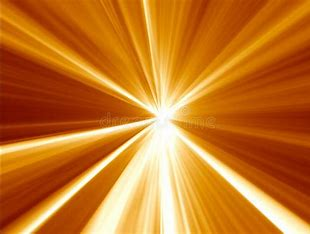
Efectos térmicos y lumínicos.
PROGRESIÓN 7
LA ENERGÍA NECESARIA PARA CAMBIAR LA TEMPERATURA DE UN OBJETO DEPENDE DE SU TAMAÑO, NATURALEZA Y DEL MEDIO.
Energía: En términos generales, la energía de un objeto se refiere a su capacidad para realizar trabajo o producir cambios. La energía puede manifestarse de varias formas, como energía cinética (debido al movimiento del objeto), energía potencial (debido a su posición o estado), energía térmica (relacionada con el calor del objeto), entre otras. La cantidad total de energía en un objeto depende de factores como su masa, velocidad y su estado físico o químico.
Temperatura:La temperatura de un objeto es una medida de la energía cinética promedio de sus partículas constituyentes. Cuanto mayor sea la temperatura, mayor será la agitación térmica de las partículas y, por lo tanto, mayor será su energía cinética promedio. La temperatura se mide en grados Celsius (°C) o Kelvin (K), donde 0 K representa el cero absoluto, la temperatura más baja teóricamente posible donde las partículas tienen una energía cinética mínima.
Tamaño del Objeto:El tamaño de un objeto se refiere a sus dimensiones físicas, como longitud, altura y anchura. El tamaño de un objeto puede influir en su capacidad para absorber y almacenar energía térmica, así como en su capacidad para cambiar de temperatura. Los objetos más grandes tienen una mayor masa y pueden almacenar más energía térmica en comparación con objetos más pequeños.
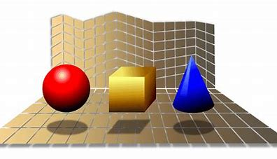
Tamaño de un objeto.
EFECTOS DE LA NATURALEZA DEL MATERIAL.
Termoplásticos:
Los termoplásticos son polímeros que se pueden calentar repetidamente y moldear cuando están calientes. Esto se debe a su estructura molecular lineal o ligeramente ramificada, que permite que las cadenas poliméricas se deslicen unas sobre otras cuando se aplica calor. Cuando se enfrían, estas cadenas se solidifican y mantienen la forma deseada. Ejemplos comunes de termoplásticos incluyen el polietileno (PE), el polipropileno (PP), el policloruro de vinilo (PVC) y el polimetilmetacrilato (PMMA). Los termoplásticos son reciclables y versátiles, utilizados en una amplia gama de aplicaciones desde envases hasta componentes automotrices.
Elastómeros:
Los elastómeros son polímeros que tienen propiedades elásticas y pueden recuperar su forma original después de deformaciones significativas. Esto se debe a su estructura molecular reticulada o entrecruzada, que permite que las cadenas poliméricas se estiren cuando se aplica una fuerza y luego vuelvan a su forma original cuando se retira la fuerza. Ejemplos comunes de elastómeros son el caucho natural y el caucho sintético, como el neopreno y el silicona. Los elastómeros se utilizan en aplicaciones que requieren flexibilidad y resistencia a la deformación, como sellos, juntas y componentes de amortiguación.
Termoestables:
Los termoestables son polímeros que, una vez moldeados y endurecidos mediante calor y reacciones químicas irreversibles (curado), no pueden fundirse ni volver a moldearse mediante calentamiento adicional. Estos polímeros tienen una estructura molecular tridimensional y están reticulados de manera cruzada, lo que les proporciona una resistencia y estabilidad térmica superior a los termoplásticos y elastómeros.
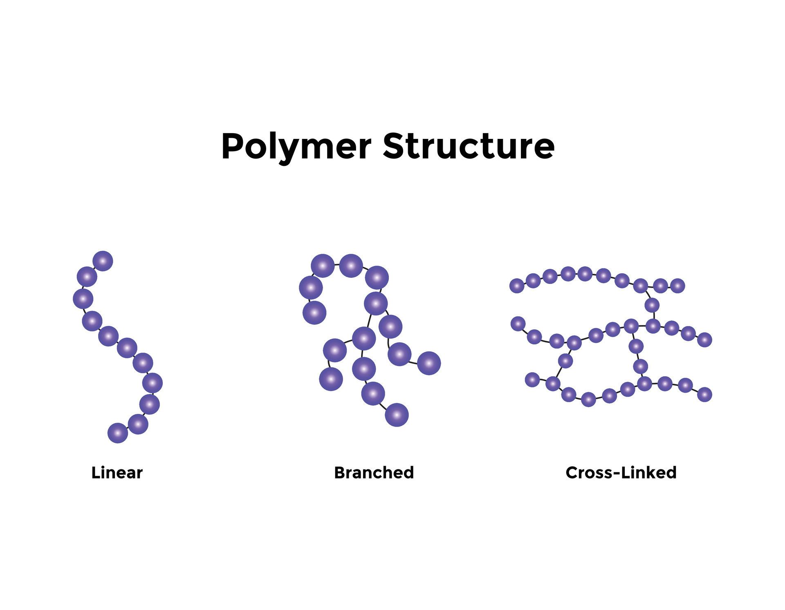
Tipos de polímeros.
LA INFLUENCIA DEL MEDIO EN LA TRANSFERENCIA DE ENERGÍA.
Conducción:
La conducción térmica es el proceso por el cual el calor se transfiere a través de un material debido a la interacción directa entre partículas. En sólidos, las partículas están cercanas unas de otras y pueden transferir energía térmica mediante vibraciones que se propagan a través de la estructura cristalina del material. Cuanto mayor sea la conductividad térmica del material, más rápido se transfiere el calor. Por ejemplo, los metales tienen alta conductividad térmica y son buenos conductores de calor.
Convección:
La convección térmica se produce en fluidos (líquidos o gases) y es el proceso mediante el cual el calor se transfiere a través de la circulación de las propias partículas del fluido. Esto se debe a que las partículas calientes se vuelven menos densas y tienden a ascender, mientras que las partículas más frías descienden para ocupar su lugar. Este movimiento convectivo crea corrientes de fluido que transportan calor a través del medio.
Radiación:
La radiación térmica es el proceso por el cual el calor se transfiere en forma de ondas electromagnéticas, como la luz infrarroja. A diferencia de la conducción y la convección, la radiación no requiere un medio material para propagarse y puede transferir calor a través del vacío. Todos los cuerpos emiten radiación térmica en función de su temperatura, según la ley de radiación de Planck. Los objetos calientes emiten radiación infrarroja que puede ser absorbida por otros objetos, calentándolos a su vez.
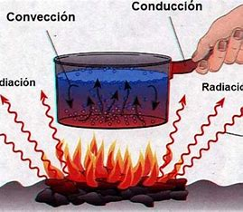
Transferencia de energía.
PROGRESIÓN 9
LA ENERGÍA NO SE CREA NI SE DESTRUYE, PERO PUEDE SER TRANSPORTADA Y TRANSFERIDA ENTRE SISTEMAS.
TRANSFERENCIA DE ENERGÍA ENTRE SISTEMAS
La transferencia de energía entre sistemas es un concepto esencial en física, donde la energía se mueve de un lugar a otro en diversas formas. Esto incluye calor, que se transfiere entre objetos debido a diferencias de temperatura; trabajo, que ocurre cuando una fuerza actúa a través de una distancia; y radiación, que es el movimiento de energía a través del espacio en forma de ondas electromagnéticas.
Estos procesos están regidos por principios fundamentales como las leyes de la termodinámica, que establecen límites a la eficiencia de la transferencia de energía y explican cómo la energía puede transformarse entre diferentes formas. La conservación de la energía asegura que la cantidad total de energía en un sistema aislado permanezca constante, aunque pueda cambiar de una forma a otra o transferirse entre objetos.
La transferencia de energía es crucial en numerosas aplicaciones prácticas y fenómenos naturales, desde la producción de electricidad y el funcionamiento de motores hasta la distribución de calor en climatización y la propagación de la luz y el sonido en el espacio. Entender estos procesos es fundamental para la ingeniería, la física aplicada y el estudio de fenómenos naturales a gran escala.
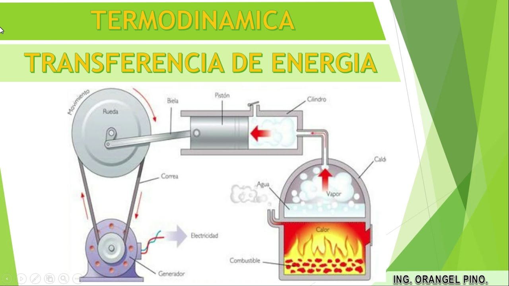
Transferencia de energía en un sistema.
LA ENERGÍA EN MOVIMIENTO
El equilibrio energético entre sistemas es un estado donde la cantidad total de energía que entra en un sistema es igual a la cantidad total que sale de él. Esto significa que no hay acumulación neta de energía en ninguno de los sistemas involucrados. Este concepto es fundamental en física porque permite predecir cómo la energía se distribuye y transforma entre diferentes sistemas o partes de un mismo sistema.
El equilibrio energético es importante en diversas áreas de la física y la ingeniería, desde la termodinámica y la transferencia de calor hasta la radiación electromagnética y la dinámica de fluidos. Permite entender cómo la energía se comporta en sistemas complejos y cómo se puede controlar para optimizar procesos y tecnologías.
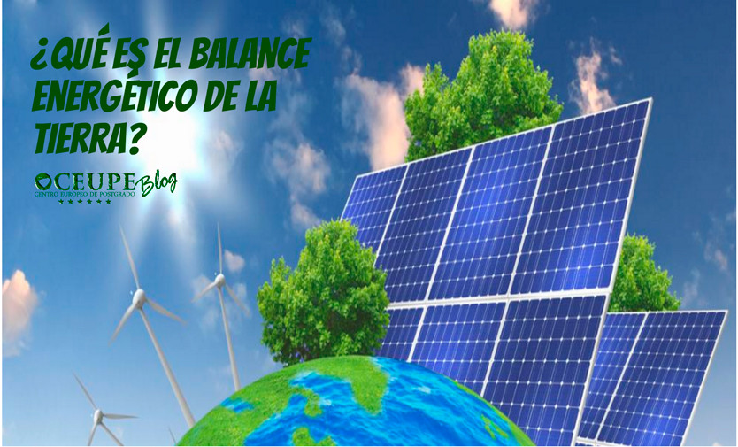
Equilibrio energético de la tierra.
CADENAS DE TRANSFERENCIA DE ENERGÍA
Las cadenas de transferencia de energía son esenciales para comprender cómo la energía se mueve a través de sistemas físicos y biológicos. Estas cadenas describen secuencias donde la energía se transfiere de un componente a otro, ya sea dentro de un ecosistema o en procesos tecnológicos.
En sistemas biológicos, como un ecosistema terrestre, la transferencia de energía comienza con los productores, como las plantas, que utilizan la energía solar para realizar la fotosíntesis y convertir la luz en energía química almacenada en forma de glucosa y otras moléculas orgánicas. Esta energía es luego transferida a los consumidores herbívoros que se alimentan de estas plantas. Los herbívoros, a su vez, son consumidos por los carnívoros, formando así una cadena de transferencia de energía que se extiende a través de diferentes niveles tróficos.
En sistemas físicos, la transferencia de energía ocurre de diversas formas. Por ejemplo, en un motor de automóvil, la energía química almacenada en el combustible se convierte en energía térmica a través de la combustión. Esta energía térmica se convierte luego en energía mecánica a medida que el motor impulsa el vehículo. Cada etapa de este proceso implica la transferencia y conversión de energía de una forma a otra, siguiendo principios físicos como la conservación de la energía y las leyes de la termodinámica.
En cualquier cadena de transferencia de energía, parte de la energía se pierde en forma de calor u otras formas de energía no aprovechable, debido a limitaciones físicas como la fricción, la resistencia eléctrica o la ineficiencia biológica. Esto afecta la eficiencia global del sistema en la transformación y utilización de energía.